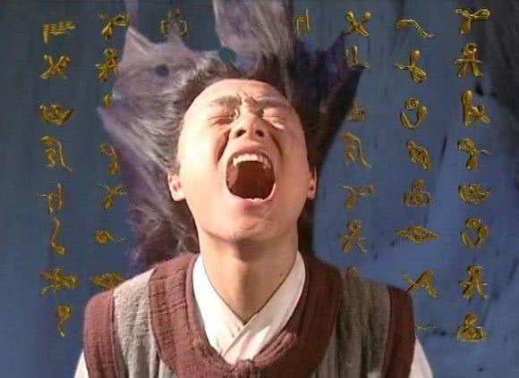
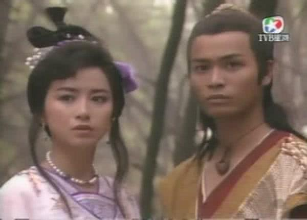
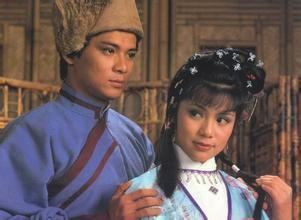
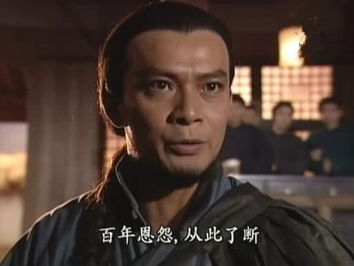
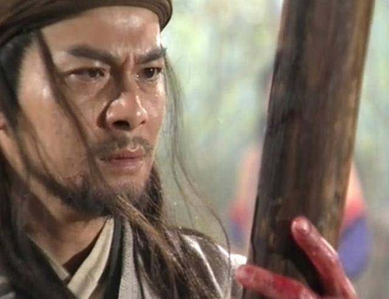
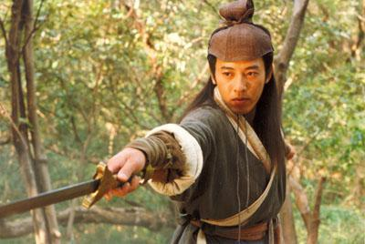

金庸小说排名,金庸小说受欢迎排名
你可能没看过金庸先生小说的原著，但你一定看过他小说改编的电视剧，在这么多作家里，由金庸老师小说改编成电视剧的是最多的。而他笔下的人物有顶天立地的大英雄，也有贪生怕死但聪明机警的小人物，他的作品的受众人群几乎囊括了所有人。那么，金庸老师笔下最受读者喜爱的著作又是哪几本呢？
TOP10、《侠客行》

石破天是金庸塑造的一个独特形象，巧合的戏剧性贯穿全文始终。从抢烧饼开始，上摩天岭，入长乐帮，误被人打成绝世内功等等，让人目不暇接。不过更离奇的是，不识一个大字的傻小子进了侠客岛，竟然破解了众多武林高手百思不得其解的太玄经武功，成为武林第一人，这究竟是命运造化还是小说刻意描写的虚幻世界？
不过金庸借用李白的《侠客行》来这样阐解武学，毕竟是一大创举，加上故事让人读得过瘾，故排在第十。
TOP9、《飞狐外传》
金庸特别擅长写小孩，像杨过、郭靖、张无忌等人均是活灵活现。不过其中的佼佼者还是首选《飞狐》中的胡斐，虽然小胡斐的描写只有恶斗商家堡一节，但小胡斐的顽皮机灵和他天性的侠义精神已经给人留下了极深的印象。
《飞狐》里还塑造了一个金庸小说中绝无仅有的女性形象——程灵素。胡斐没能爱上程灵素，虽然可以说是命运使然，但和袁紫衣的关系似乎写的有点牵强，不符合他自身的性格，只能理解爱是盲目的。
飞狐是中篇，又在处理程灵素上有纰漏，正如《连城》写得太苦一样，加上虎头蛇尾，飞狐第九。
TOP8、《连城诀》

《连城诀》全书透着一股悲苦的味道，但不同于《天龙》那种因果命运的苦，它是对人世丑恶嘴脸的揭露，悲剧的意味远远大于苦涩：
师叔扮做乞丐指点狄云是挑拨；师父故意错教武功来掩饰；师兄把师弟生埋在墙中还要栽赃；天宁寺众人挣抢珠宝而中毒发狂；父亲亲手活葬女儿不够再来下毒...
连城诀不但写了人性的悲剧，把爱情也写得极为悲凄，排第八。
TOP7、《倚天屠龙记》
全书以四句倚天屠龙歌谣贯穿始终，引申出俞岱岩的悲剧，又有张无忌幼年受伤疑问，海岛迎谢逊的小船迷团，紧接王盘山屠龙刀大会，张无忌出生冰火岛，光明顶明教恶斗六大门派，灵蛇岛苦战波斯三使，少林屠狮大会，这些悬念一环扣一环，让人读不释手。武打情节更是精彩纷呈，气势惊险。
但是也有很多不尽如人意的地方，特别是周芷若的形象形象反转，如果单纯以师傅遗命的压力来解释，似乎没能触摸到实质。再如谢逊对周芷若的掩饰也是很牵强，虽然有后来花车上的喻示，但依谢逊的智谋勇略，没必要委屈到不可理解的做法。
倚天的男女主角光彩被配角抢去不少，情节跌宕却屡有不连贯之处，故排在第七。
TOP6、《射雕英雄传》

讲述了郭靖背负着家恨国仇闯入江湖，并遇到了红颜知己黄蓉，最终成长为“侠之大者”的民族英雄的武林故事。《射雕》将武、侠、情巧妙地融和在了一起。
但《射雕》始终没有摆脱传统武侠的观念，全书正邪忠奸清辨，是非黑白分明，并没能深一层挖掘人性的真义，排第六。
TOP5、《雪山飞狐》

金庸评叙这部书时说过：“只有《雪山飞狐》一部，是在结构上比较花了点心思”。通篇小说下来，实际上只讲述了一天的故事，而作者却用这一天描绘出了胡一刀、胡夫人至死不渝的爱情，以及胡一刀和苗人凤之间肝胆相照的伟大友谊。还有，各种曲折离奇的情节更是令人拍案叫绝，回味无穷。
全文虽然篇幅短小，但韵味深长，故排第五。
TOP4、《神雕侠侣》
《神雕》主要讲杨过和小龙女天地为之动容的爱情故事，另一方面也写出了人类理性的矛盾，不过这点也导致了很多人不喜欢杨过，倔强、叛逆、偏激、报复心重、有时狂得不分是非对错。
总之，《神雕》不同于传统的武侠小说，它致力于人性和人世的描绘，为以后正非正，邪非邪的基调埋了伏线，也给理性冲突的观点留下了更广阔的讨论空间，所以神雕第四。
TOP3、《鹿鼎记》

关于这本书的争议很多，韦小宝根本不是侠，也不会武（只会那套逃命步法，还要铁甲护身），他机灵百变，油嘴滑舌，识得察颜观色，溜须拍马，简直是坏了武林的规矩，却让许多人喜欢。韦小宝确实已经写活了。
所以，《鹿鼎记》已经不是单纯局限在武侠这个小范围内，更深入到对社会和人生的披露、探讨。故排第三。
TOP2、《天龙八部》

天龙八部是什么东西，有什么用意，金庸已做了解释。人世间的欢喜和悲苦，在佛教中通通认为一切皆苦，天龙正是描写了世人面对八苦的种种心态：
萧远山大仇得报，却是感到无处可去；游坦之铁罩加头、自挖双眼，阿紫始终还是悬崖一跳；天山童姥和李秋水互夺情郎，逍遥子爱上的却是石头人；慕容博以死待机，终要归依佛门而亲子失智，乔峰武功盖世、胆略过人，却自杀而终......
所有人无不痴迷争斗，但总是失意无奈，痛苦相伴，最终还是要在这苦难中寻求解脱。排第二。
TOP1、《笑傲江湖》

《神雕》，局限在个人的小性中，《天龙》，金庸把英雄摆在了矛盾中来处理，但发现这只会有悲剧，于是金庸通过令狐冲，才真正得到了理性的答案，将情性、理义作了更深范围的突破。
《笑傲江湖》不仅写出了爱恨情仇、武侠争斗，更深刻地揭露了社会现实、人生哲理，是金庸武侠小说的颠峰之作。
扩展阅读：
金庸小说武功排名,金庸小说中十大最强武功排行榜【武功版+人物版】
一秒钟记住本站网址：JinYongXiaoShuo.COM，金庸小说拼音全拼写。